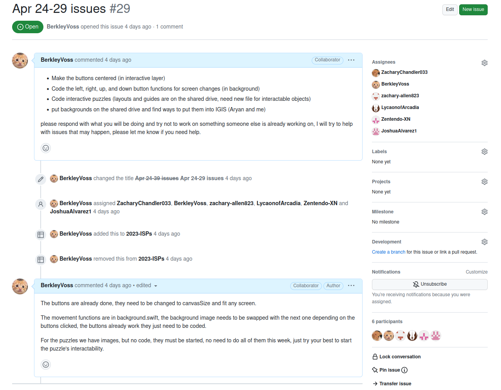
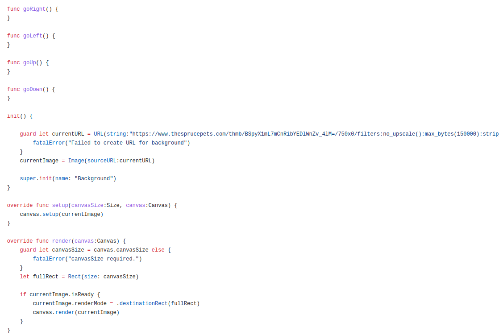

|
Github
|
8-May-2023
This week We made the presentation for the ISP and presented it.
|
1-May-2023
My plans this week are the same as last week.
This weeks issues
I have come to the realization that even if everyone who is in my group starts to code, we will not get done fast enough. So I have decided that I will use the backgrounds that have been made, and ut them into a google presentation.
 Challenges:
Challenges:
Noone besides the person who made all of the backgrounds, sounds, and story, has helped code, even when asked and assigned code to do. I have made all of the code myself and cannot finish it in time.
|
24-Apr-2023
My plans for the week are to get others to make the buttons change the screens, and center the buttons, as well as direct them and debug code.
This weeks issues
I tryed to get others to help code, unsuccessfully.

Challenges:
Noone else is helping code. I need help coding, I have AP exams next week.
|
17-Apr-2023
My plans for the week are to get the image centered and add the right images, as well as get others started on coding the project.
commit place
I made the image fullscreen.

Challenges:
I had something to do on friday, and got a little sick, so I lost some time. I also needed to debug my git push and git add so I could get things on github.
|
10-Apr-2023
One scheduling challenge I faced this week was monday being off and me having a doctors appointment.
One technical challege I encountered was trying to get the buttons to be in the center of the canvas.
One interpersonal challenge was helping with other clubs and classes while working on the ISP.
Signifigant Achievments
|
3-Apr-2023
One scheduling challenge I faced this week was going camping and friday being a holiday.
One technical challege I encountered was trying to get my gidhub to work.
One interpersonal challenge was trying to get team menber to upload the background images, but they didn't.
Signifigant Achievments
|
27-Mar-2023
One scheduling challenge I faced this week was hlping out for other classes and projects while trying to do the ISP.
One technical challege I encountered was the dissapering items for the inventory.
One interpersonal challenge was helping the programmers and trying to grt the others to start working.
i can't get the git push to work for the code so the code is just online.
Signifigant Achievments
|
20-Mar-2023
One scheduling challenge I faced this week was nothing really, I didn't face many scheduling challenges his week.
One technical challege I encountered was problems with the background images and getting them to change.
One interpersonal challenge was motivating myself to work through the ISP because I feel rushed and that the ISP will not get done on time.
Signifigant Achievments
|
13-Mar-2023
One scheduling challenge I faced this week was getting work done in class and on the ISP.
One technical challege I encountered was making the start of the screen change function.
One interpersonal challenge was trying to get everyone to work right after a long break.
Signifigant Achievments
|
06-Mar-2023
Spring Break!
|
20-Feb-2023
One scheduling challenge I faced this week was that we had monday and tuesday off, meaning I only had one class period this week for computer science.
One technical challege I encountered was finishing up other classwork and homework while working on our ISP.
One interpersonal challenge was motivating the team to work, becasuse we had a long weekend.
|
13-Feb-2023
One scheduling challenge I faced this week was getting things done and juggling the ISP with personal problems.
One technical challege I encountered was adding the final pieces for the layout and puzzles.
One interpersonal challenge was figuring out what to code with.
|
6-Feb-2023
One scheduling challenge I faced this week was finishing classwork while having to plan parts of the game.
One technical challege I encountered was figuring out the layout of the game.
One interpersonal challenge was dealing with unreasonable demands for the game. As well as what should be on the MVP and what can be left out.
|
30-Jan-2023
Snow week, no school.
|
23-Jan-2023
One scheduling challenge I faced this week was that I had to prepare for a test. Unlike other weeks, because I had to study and prepare for a test, I didn't get as much work done on the ISP. I would have liked to have more time to do the ISP, but studying comes before the ISP.
One technical challege I encountered was that my wifi went out. The wifi at my house went out, so I couldn't do my online homework or the online parts of the ISP for a couple of days. This, combined with multiple tests I needed to study for, caused a bit of a challenging week to get everything done on time.
One interpersonal challenge was getting work done, because of this week being hectic many stopped the ISP to study for the SQL test. Since everyone paused what they were doing on the ISP, it was difficultto get everyone back on track and doing the ISP.
|
16-Jan-2023
One scheduling challenge I faced this week was that I only had one class period this week for work. Since a few of my team menbers are in the same class period as me we usually converse on how the project is going, but since there was only two days I had Computer Science II and one of those days was a lecture for a test I did not have as much time to discuss the ISP in person.
One technical challenge I encountered was hashing out all of the plans for the varius puzzles in our game. Because the game is a puzzle game, there needs to be puzzles, but making creative and fun puzzles takes a lot of time. An additional thing to think about when making the puzzles was items and other smaller puzzles to lead up to the more complicated ones.
One interpersonal challenge was dealing with one group member who thought the game was going to be something different. The team member beleived that the game was going to be entirly different then what had been planed. Thankfully, other group menbers and I managed to correct the misunderstanding, but their constantly arguing to change the game because of their misunderstanding ate up time and soured the atmosphere.
|
9-Jan-2023
One scheduling challenge I faced was that, besides e-mail, since some of my group members were in other class periods, I had no way of contacting them. I decided to get evryones phone number, but now have to wait for them to e-mail me their numbers.
One technical challenge was figuring out how to finalize the outline of our project. Since we never finalized the outline of our project, we had a difficult time finding where to start. We decided to start finalizing out project and setting it in stone.
One Interpersonal challenge was that is was frusterating getting everyones contacts. Since I had a limmited amount of contact with them I used phone numbers, but this lead to having to get everyones phonenumber. This was not an easy task with students I didn't know or wernt in my class period, but I managed to get everyones number eventually.
|
2-Jan-2023
Software development engineers design and build software. They will usually work with other engineers, or on a team, to figure out the best way to make the software. They also confer with managers on the specifics of the software.
QA engineers check code and run it for bugs. They make specific tests based on the requirments for the code. They can work with a team, or just a single software development engineer.
Project managers are responcible for planning and keeping everyone in their team on track. They usually work with a team and have specifics they need to make that team follow. They also guide teams throught time constraignts and project demands.
Product managers are responcible for making sure the product stays on plan and works as it should. They, like project managers, also work with a team and have constraignts on time and certain aspects that need to be completed. Unlike project managers, product managers are more focused on the product than giuding the team.
Release engineers work with software development engineers to plan out the software. They will work together to perfect the code plan before the software engineer starts coding. The release engineer can work with an entire team of others to perfect the code plan.
|